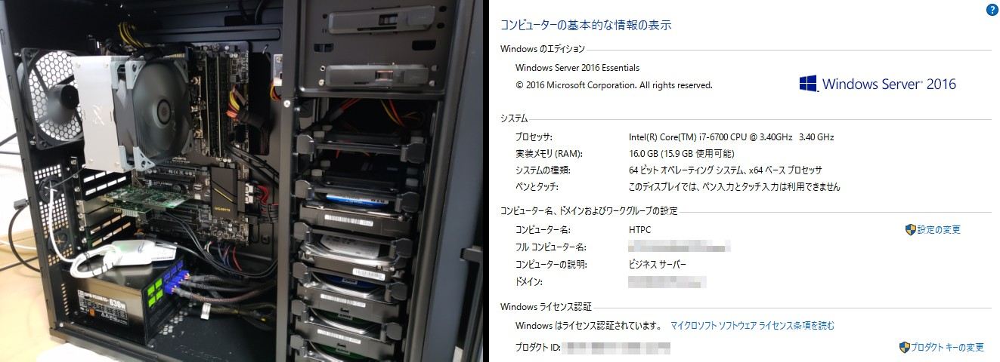

メインPC

| Case | NZXT H440 (Black + Blue) |
|---|---|
| MotherBoard | ASUS PRIME B350-PLUS |
| CPU | AMD Ryzen7 1700 (OC to 3.7GHz) |
| CPU Cooler | Scythe 虎徹 + Corsair AF120 Quiet LED(Blue) |
| Memory | Crucial W4U2400CM-8G (8GBx2) |
| GraphicCard | msi Radeon RX480 GAMING X 4G |
| CaptureCard | SKNET MonsterTV X3 |
| SSD (OS) | SK Hynix SL300 (240GB) |
| SSD (Games) | Samsung 840Series (120GB) + 850EVO (240GB) + ADATA SP900 (128GB) |
| HDD (Data) | WesternDigital WD20EZRX (2TB) |
| PSU | Scythe KAMARIKI Platinum SPKRP-600 (600W 80+PLATINUM) |
| OS | Windows10 Home (64bit) |
| KeyBoard | Archiss ProgresTouch RETRO TKL (CherryMX Brown) |
| Mouse | Razer Taipan |
| Headphone | Kingston HyperX Cloud Stinger + Razer Surround Pro |
| Microphone | Sony ECM-PCV80U + behringer XENYX 302USB |
| Monitor | BenQ XL2420Z (1920x1080 144Hz) |
| Comment | 函館の自宅で使用している、メインのPC。 今時のゲームをプレーするのに不足しない十分なスペックがあり、ゲームから動画エンコードまでそつなくこなす。 8コア16スレッドモデルのRyzenを常用範囲でOCし、動画エンコ時間はi7比で1.8倍くらいになりました。 |
録画・サーバーPC
| Case | SilverStone SST-PS07B |
|---|---|
| MotherBoard | ASUS AM1M-A |
| CPU | AMD Athlon 5350 |
| CPU Cooler | Arctic Alpine M1 Passive |
| Memory | CFD Elixir W3U1600HQ-4G (4GBx2) |
| SATACard | ProjectM PCIX2-4PSATA3 |
| TV-Tuner Card | PLEX PX-W3PE Rev.1.3 |
| SSD (OS) | Transcend TS64GSSD340(64GB) |
| HDD (Data) | WesternDigital WD20EZRX(2TB) |
| HDD (TVrec1) | WesternDigital WD20EZRX (2TB) |
| HDD (TVrec2) | WesternDigital WD30EZRZ-RT (3TB) |
| PSU | 玄人志向 KRPW-P630W/85+ (630W 80+BRONZE) |
| OS | Windows8.1 (64bit) |
| KeyBoard | Pokemon Typing Keyboard (Bluetooth) |
| Mouse | Softbank SB-MO01-BTLS (Bluetooth) |
| Monitor | LG Flatron E2242 (1920x1080) |
| Comment | 函館の自宅で使用している、テレビ録画用PC。低消費電力のAthlon5350を利用し、24時間稼働のサーバー機としても動作。ゲームサーバーやVPNサーバー、ファイルサーバーなどとして活用中。 |
実家用ミニキューブPC

| Case | RAIJINTEK METIS (Blue) |
|---|---|
| MotherBoard | ASUS P8H67I REV3.0 |
| CPU | Intel Core i5-3570K |
| CPU Cooler | Scythe 白虎 |
| Memory | PATRIOT MEMORY DDR3-1600 (8GBx1) |
| GraphicCard | 玄人志向 GF-GTX970-E4GB/OC/SHORT |
| GPU Cooler | CoolerMaster Seidon120XL + Corsair SP120 QE LED (Blue) |
| SSD (OS) | ADATA SP900 (128GB) |
| HDD (Data) | HGST 2.5inch HDD (640GB) |
| PSU | 玄人志向 KRPW-SX400W/90＋ (400W 80+GOLD SFX) |
| OS | Windows10 Home (64bit) |
| KeyBoard | iBUFFALO BSKBC02BK |
| Mouse | FOXXRAY FXR-BM-05 |
| Headphone | Kingston HyperX Cloud Core |
| Monitor | LG 22MP47HQ-P (1920x1080 AH-IPS) |
| Comment | 東京の実家で使用しているPC。Mini-ITXサイズの小型ケースに、Core i5-3570KとGTX970を押し込んだゲーミングマシン。爆熱グラボを冷やすため簡易水冷をDIYで搭載して使用中（※詳細）。 |
実家用録画サーバーPC

| Case | Century CF-A6719BK150 |
|---|---|
| MotherBoard | GIGABYTE GA-J1800N-D2H |
| CPU | Intel Celeron J1800 (OnBoard) |
| Memory | S.O.DIMM DDR3-1333 (2GBx2) |
| TV-Chuner | PLEX PX-S1UD V2.0 |
| HDD (Data) | Unknown 2.5inch HDD (500GB) |
| OS | WindowsServer2012R2 Essentials (64bit) |
| Comment | 東京の実家で使用している、テレビ録画用PC。Mini-ITXサイズの小型ケースにファンレス省電力のマザーを詰め込んでいる。テレビ東京とTOKYO MXさえ録画できればいいので、地上波1波のみのUSBタイプチューナーを採用して録画を行っている。 |